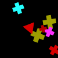
(1)
A gray triangle is a different shape from a cyan shape.
A cyan shape is a different shape from a gray triangle.
A rectangle is the same shape as a magenta shape.
A yellow shape is a different shape from a gray triangle.
A cyan shape is the same shape as a rectangle.
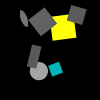
(2)
A magenta shape is a different shape from a magenta shape.
A cyan shape is a different shape from a green rectangle.
A cyan shape is the same color as a rectangle.
A magenta rectangle is a different shape from a magenta shape.
A semicircle is the same color as a pentagon.
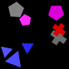
(3)
A blue shape is a different shape from a cyan ellipse.
A cross is the same color as a magenta shape.
A red shape is a different shape from a red ellipse.
A square is a different shape from a red shape.
A magenta pentagon is a different color from a cross.
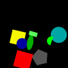
(4)
A green shape is a different shape from a cross.
A green shape is a different shape from an ellipse.
A pentagon is the same color as a cyan semicircle.
A red shape is a different shape from a green ellipse.
A triangle is a different color from a circle.
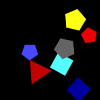
(5)
A square is the same color as a triangle.
A green shape is the same shape as a triangle.
A triangle is the same color as a magenta shape.
A triangle is the same color as a rectangle.
A magenta shape is the same shape as a triangle.
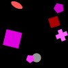
(6)
A cyan shape is the same shape as a gray cross.
A green shape is the same shape as a gray cross.
A yellow shape is the same shape as an ellipse.
A cross is the same shape as a yellow shape.
A cross is the same shape as a magenta shape.
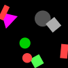
(7)
A red shape is the same shape as a red pentagon.
A pentagon is the same color as a red shape.
A square is a different color from a gray ellipse.
A red pentagon is the same color as a triangle.
A red shape is a different color from a red pentagon.
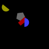
(8)
A triangle is the same color as a red shape.
A red shape is a different shape from a square.
A magenta shape is a different shape from a square.
A cross is the same color as a red shape.
A blue shape is the same shape as a red cross.
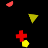
(9)
A triangle is a different color from a red pentagon.
A pentagon is the same color as a red pentagon.
A red shape is the same shape as a red pentagon.
A red shape is a different shape from a red pentagon.
A triangle is the same color as a red shape.
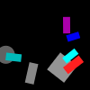
(10)
A green shape is a different shape from a cyan triangle.
A blue shape is a different shape from a circle.
A cyan shape is a different shape from a red triangle.
A semicircle is a different color from a red triangle.
A circle is the same color as a green square.

(11)
A green pentagon is a different color from a cross.
A cyan shape is a different color from a square.
A cross is the same color as a green pentagon.
A green shape is a different shape from a cyan cross.
A cyan shape is the same shape as a green pentagon.
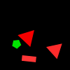
(12)
A red shape is the same shape as a red shape.
A square is a different color from a red triangle.
A gray shape is the same shape as a magenta semicircle.
A magenta shape is a different shape from a cyan shape.
A red shape is the same shape as a square.
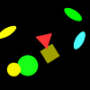
(13)
A cyan shape is the same shape as a magenta pentagon.
A green shape is the same shape as a magenta pentagon.
A green shape is a different shape from a magenta pentagon.
A green shape is the same color as a magenta cross.
A cyan shape is the same shape as a green pentagon.
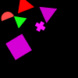
(14)
A red shape is the same shape as a gray rectangle.
A cyan shape is a different shape from a square.
A square is the same color as a red shape.
A red shape is the same color as a cyan rectangle.
A semicircle is a different color from a red semicircle.
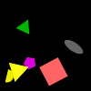
(15)
A yellow shape is a different shape from a yellow shape.
A cross is a different color from a gray circle.
A pentagon is the same color as a yellow rectangle.
A gray shape is the same shape as a yellow rectangle.
A yellow rectangle is a different shape from a gray shape.
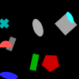
(16)
A gray shape is a different shape from a red rectangle.
A blue shape is a different shape from a gray triangle.
A gray shape is a different shape from a cyan ellipse.
A rectangle is the same color as a gray rectangle.
A cyan rectangle is the same color as a rectangle.
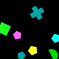
(17)
A magenta shape is the same shape as a yellow shape.
A yellow shape is the same shape as a circle.
A magenta shape is a different color from a circle.
A pentagon is the same color as a magenta shape.
A cross is the same color as a cyan circle.
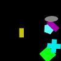
(18)
A square is the same color as a gray triangle.
A cyan shape is a different shape from a green square.
A gray shape is the same shape as a green square.
A triangle is the same color as a gray circle.
A square is the same color as a circle.

(19)
A cross is a different color from a magenta circle.
A triangle is a different color from a green circle.
A green circle is the same shape as a magenta shape.
A magenta shape is the same shape as a magenta shape.
A square is a different color from a magenta shape.
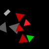
(20)
A cyan shape is a different shape from an ellipse.
An ellipse is a different color from a magenta triangle.
A blue shape is a different shape from a triangle.
An ellipse is a different color from a magenta square.
A cyan shape is the same shape as a red triangle.
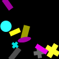
(21)
A gray shape is the same shape as a green semicircle.
A magenta shape is the same shape as a gray semicircle.
A gray shape is the same shape as a green semicircle.
A green semicircle is the same shape as a gray shape.
A triangle is a different color from a green shape.
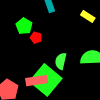
(22)
A cross is a different shape from a magenta shape.
A red shape is the same shape as a blue cross.
A semicircle is the same color as a blue pentagon.
A gray shape is a different shape from a cross.
A pentagon is a different color from a blue cross.
(23)
A magenta shape is a different shape from a green square.
A yellow shape is the same shape as a cross.
A cross is a different color from a rectangle.
A magenta shape is a different shape from a yellow rectangle.
A rectangle is a different color from a yellow rectangle.
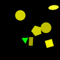
(24)
An ellipse is a different color from a blue shape.
A rectangle is a different color from a red shape.
A blue shape is the same color as a triangle.
A cyan shape is a different shape from a red rectangle.
A yellow square is the same shape as a blue shape.
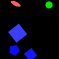
(25)
A gray shape is a different shape from a square.
A gray rectangle is the same color as an ellipse.
A gray shape is a different color from an ellipse.
A gray ellipse is a different shape from a magenta shape.
A gray shape is the same color as a gray circle.

(26)
A gray shape is a different shape from a green cross.
A circle is the same color as a green rectangle.
A cross is the same color as a green cross.
A triangle is the same color as a red pentagon.
A gray shape is the same shape as a cross.
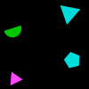
(27)
An ellipse is a different color from a green shape.
A magenta shape is a different shape from a circle.
A red shape is the same shape as a green circle.
A rectangle is a different color from a blue shape.
A circle is a different color from a magenta cross.
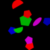
(28)
A magenta shape is a different shape from a blue triangle.
An ellipse is a different color from a blue shape.
A green shape is a different shape from a green triangle.
A pentagon is a different color from a blue shape.
A gray shape is a different shape from an ellipse.

(29)
A pentagon is the same shape as a blue shape.
A pentagon is the same color as a gray rectangle.
A yellow shape is the same shape as a gray pentagon.
A gray shape is a different color from a cross.
A rectangle is the same color as a blue shape.
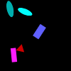
(30)
A square is the same color as a blue shape.
A magenta shape is a different shape from a blue circle.
A magenta shape is a different shape from a yellow square.
An ellipse is the same color as a blue cross.
A cyan shape is the same shape as a semicircle.
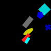
(31)
A magenta ellipse is the same shape as a yellow shape.
A magenta shape is the same shape as a yellow ellipse.
A circle is the same color as a yellow pentagon.
A yellow ellipse is the same color as a pentagon.
A magenta ellipse is a different color from an ellipse.
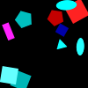
(32)
A pentagon is the same color as a green shape.
A circle is the same color as a green pentagon.
A circle is the same color as a green shape.
A square is a different color from a gray circle.
A pentagon is a different color from a green shape.
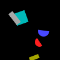
(33)
A gray shape is a different shape from a blue square.
A blue square is a different shape from a gray shape.
A semicircle is a different color from a blue semicircle.
A square is a different color from a cyan semicircle.
A red shape is a different shape from a semicircle.
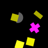
(34)
A magenta shape is the same shape as a triangle.
A square is a different color from a gray triangle.
A pentagon is a different color from a yellow rectangle.
A triangle is a different color from a blue circle.
A gray shape is the same shape as an ellipse.
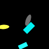
(35)
A red shape is the same shape as a yellow circle.
A yellow shape is the same shape as a red semicircle.
A red shape is a different shape from a yellow semicircle.
A red shape is a different shape from a magenta semicircle.
A yellow shape is a different shape from a red shape.
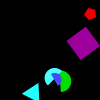
(36)
A cyan shape is a different shape from a yellow rectangle.
A gray shape is the same shape as a cyan pentagon.
A red shape is a different shape from a cyan pentagon.
A cyan shape is the same shape as a red rectangle.
A cyan pentagon is the same color as a cross.
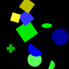
(37)
A magenta shape is a different shape from a blue rectangle.
A cyan shape is a different color from a semicircle.
A magenta shape is the same shape as a gray semicircle.
A cyan shape is a different shape from a magenta semicircle.
A square is the same color as a magenta rectangle.

(38)
A gray shape is a different shape from a yellow square.
A blue shape is the same shape as a gray square.
A cyan shape is a different shape from a yellow square.
A triangle is a different color from a cyan circle.
A cyan triangle is a different shape from a gray shape.
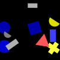
(39)
A yellow shape is the same shape as a yellow circle.
A blue shape is the same shape as a yellow circle.
A gray shape is the same shape as a yellow circle.
A blue shape is the same shape as a blue ellipse.
A magenta shape is a different shape from a blue ellipse.
(40)
A cyan shape is the same color as a cross.
A green square is the same color as a rectangle.
A blue shape is a different color from a cross.
A cyan shape is a different shape from a rectangle.
A green shape is the same shape as a green shape.
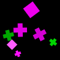
(41)
A blue shape is the same color as a blue ellipse.
A triangle is the same color as a blue square.
A rectangle is the same color as a blue triangle.
A triangle is the same color as a blue ellipse.
A triangle is a different shape from a gray shape.

(42)
A red semicircle is a different shape from a gray shape.
A square is a different color from a gray circle.
A green shape is the same color as a magenta triangle.
A semicircle is a different color from a gray shape.
A pentagon is the same color as a yellow shape.
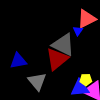
(43)
A gray shape is a different shape from a cross.
A green shape is a different shape from a gray rectangle.
A yellow shape is the same shape as a green cross.
A circle is a different color from a green shape.
A cross is a different color from a blue circle.
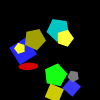
(44)
A rectangle is the same color as a green ellipse.
A magenta shape is the same shape as a square.
A green shape is the same shape as a gray semicircle.
A green shape is the same shape as a green semicircle.
A green shape is the same shape as a gray semicircle.
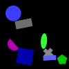
(45)
A green shape is the same color as a triangle.
A rectangle is a different color from a green triangle.
A rectangle is the same shape as a green shape.
A triangle is the same color as a green pentagon.
A gray shape is the same shape as a red pentagon.
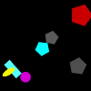
(46)
A green shape is a different shape from a triangle.
A cyan square is a different shape from a blue shape.
A blue shape is a different shape from a square.
A triangle is the same shape as a magenta shape.
A green cross is the same shape as a magenta shape.
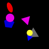
(47)
A pentagon is the same color as a green ellipse.
An ellipse is the same color as a green shape.
A green rectangle is the same color as a cross.
A yellow shape is a different shape from a red pentagon.
A cross is the same color as a rectangle.
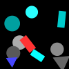
(48)
A green shape is a different shape from a blue square.
A green shape is a different color from a blue ellipse.
An ellipse is the same color as a blue square.
A yellow shape is the same shape as a red square.
A yellow shape is the same shape as a blue square.
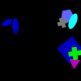
(49)
A blue shape is the same shape as a yellow square.
A circle is the same color as a square.
A red shape is a different shape from a red semicircle.
A yellow shape is a different shape from a red pentagon.
A blue shape is the same shape as a red circle.
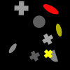
(50)
A yellow shape is a different color from a circle.
A yellow shape is the same shape as a green circle.
A yellow shape is the same color as a yellow circle.
A square is a different color from a yellow shape.
A green square is a different color from a square.
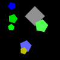
(51)
A cyan shape is a different shape from a cyan shape.
A semicircle is the same color as a semicircle.
A cyan shape is a different shape from a red pentagon.
A cyan semicircle is a different color from a semicircle.
A red shape is the same shape as a cyan shape.
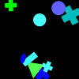
(52)
A red shape is the same shape as a blue pentagon.
A magenta shape is the same shape as a red pentagon.
A circle is the same color as a blue cross.
A pentagon is a different color from a cyan pentagon.
A red shape is a different shape from a blue pentagon.
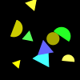
(53)
An ellipse is the same color as a green cross.
A semicircle is a different color from a green cross.
A semicircle is the same shape as a gray shape.
A cross is the same color as a green ellipse.
A blue shape is a different color from a green ellipse.
(54)
A semicircle is the same color as a red shape.
A red shape is a different shape from a semicircle.
A semicircle is the same color as a cyan ellipse.
A semicircle is the same color as a magenta circle.
A circle is a different color from a magenta semicircle.
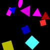
(55)
A magenta shape is a different shape from a red circle.
A pentagon is a different color from a red circle.
A pentagon is the same color as a magenta semicircle.
A pentagon is a different color from a magenta shape.
A magenta shape is a different shape from a magenta semicircle.
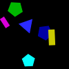
(56)
A square is the same color as a yellow triangle.
A rectangle is the same color as a red square.
A yellow shape is the same shape as a triangle.
A red shape is the same color as a yellow rectangle.
A pentagon is a different shape from a yellow shape.
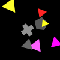
(57)
A yellow cross is a different color from an ellipse.
A magenta shape is a different shape from a magenta semicircle.
A cyan shape is a different shape from a magenta semicircle.
A semicircle is a different color from a yellow ellipse.
A cyan shape is a different shape from a magenta semicircle.
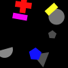
(58)
A cyan triangle is a different shape from a gray shape.
A red shape is a different shape from a cyan triangle.
A triangle is the same color as a green ellipse.
A cyan shape is the same color as a cyan triangle.
A square is a different color from a cyan shape.
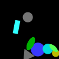
(59)
A magenta shape is a different shape from a red cross.
A gray shape is the same shape as a cross.
A cross is a different shape from a green shape.
A cross is the same shape as a green shape.
An ellipse is a different color from a green square.
(60)
A pentagon is a different color from a magenta triangle.
A cyan shape is a different shape from a red pentagon.
A cross is a different color from a red shape.
A gray pentagon is a different color from a pentagon.
A triangle is the same shape as a yellow shape.
(61)
A blue ellipse is a different shape from a magenta shape.
A red shape is a different shape from a magenta rectangle.
A rectangle is the same color as a magenta rectangle.
A magenta shape is the same shape as a rectangle.
A triangle is the same color as a green shape.
(62)
A yellow shape is the same shape as a cyan shape.
A red shape is a different shape from a semicircle.
A cross is the same color as a cyan shape.
A cyan shape is the same color as a cyan cross.
A cross is a different color from a cyan cross.
(63)
A red cross is a different color from a pentagon.
A blue cross is the same color as a square.
A blue shape is a different color from a triangle.
A square is the same color as a blue cross.
A gray shape is a different color from a blue cross.
(64)
A square is the same color as a square.
A magenta square is the same shape as a green shape.
A semicircle is a different color from a magenta ellipse.
A square is a different color from a green square.
A gray shape is a different shape from a red semicircle.
(65)
An ellipse is the same shape as a cyan shape.
An ellipse is a different color from a yellow ellipse.
A cyan shape is a different shape from a cyan ellipse.
A rectangle is a different color from a yellow shape.
A cyan rectangle is a different shape from a yellow shape.
(66)
A gray shape is a different shape from a green shape.
A cross is a different color from a red shape.
A circle is the same color as a green rectangle.
A green pentagon is the same color as a square.
A triangle is a different color from a green shape.
(67)
A blue shape is the same shape as a cyan ellipse.
A cyan shape is a different shape from an ellipse.
A cross is the same color as a green shape.
A yellow shape is a different shape from a cyan square.
A magenta shape is a different shape from a gray square.
(68)
A cyan shape is a different shape from a yellow ellipse.
A yellow shape is the same shape as a blue pentagon.
A yellow shape is a different shape from a gray pentagon.
A pentagon is the same color as a blue shape.
A blue shape is the same color as a pentagon.
(69)
A green shape is the same shape as a circle.
A gray shape is a different shape from a red circle.
A circle is the same color as a gray shape.
A circle is a different color from a green semicircle.
A gray shape is the same color as a gray circle.
(70)
A square is the same color as a cyan shape.
A cyan square is a different color from a square.
A square is the same color as a yellow shape.
A triangle is a different color from a red ellipse.
A cyan shape is the same shape as an ellipse.
(71)
A magenta shape is a different shape from an ellipse.
A yellow shape is the same shape as a yellow ellipse.
An ellipse is the same color as a yellow circle.
A yellow shape is a different shape from a triangle.
A green shape is a different color from a yellow triangle.
(72)
A gray shape is a different color from a triangle.
A magenta shape is the same shape as a red rectangle.
A blue shape is the same shape as a gray triangle.
A red shape is a different shape from a rectangle.
A red shape is the same shape as a gray triangle.
(73)
A square is the same shape as a blue shape.
A rectangle is the same color as a blue shape.
A rectangle is a different color from a blue shape.
A cyan ellipse is the same color as a rectangle.
A rectangle is a different color from a yellow shape.
(74)
A magenta shape is the same shape as a cyan pentagon.
A blue shape is the same shape as a pentagon.
A magenta shape is the same shape as a yellow pentagon.
An ellipse is the same color as a magenta pentagon.
An ellipse is a different color from a blue triangle.
(75)
A square is a different color from a yellow triangle.
A gray shape is the same shape as a square.
A gray shape is a different shape from a blue pentagon.
A blue shape is a different shape from a triangle.
A pentagon is the same color as a blue triangle.
(76)
A semicircle is a different color from a blue rectangle.
A cyan shape is the same shape as a cross.
A triangle is a different color from a magenta pentagon.
A rectangle is the same color as a magenta cross.
A pentagon is the same color as a magenta cross.
(77)
A magenta shape is a different color from a blue circle.
A semicircle is a different color from a blue semicircle.
A blue shape is the same color as a blue ellipse.
A blue shape is a different shape from a circle.
A blue shape is the same shape as a yellow ellipse.
(78)
A red shape is a different shape from an ellipse.
A square is a different color from a rectangle.
A gray ellipse is a different color from a pentagon.
A pentagon is the same color as a gray ellipse.
A blue shape is the same shape as an ellipse.
(79)
A gray shape is the same shape as a magenta triangle.
An ellipse is a different color from a magenta shape.
A red shape is the same color as a triangle.
A gray shape is a different shape from a magenta triangle.
A triangle is a different color from a gray ellipse.
(80)
A yellow ellipse is a different shape from a red shape.
A yellow shape is the same shape as a blue triangle.
A cyan shape is a different shape from a semicircle.
A cyan shape is the same shape as a blue triangle.
A rectangle is the same color as a blue shape.
(81)
A semicircle is the same color as a yellow shape.
A rectangle is a different color from a green shape.
An ellipse is a different color from a yellow shape.
A yellow shape is a different shape from a semicircle.
A magenta shape is the same shape as a square.
(82)
An ellipse is a different color from a yellow shape.
A square is a different color from a yellow shape.
A circle is a different color from a yellow shape.
A pentagon is a different color from a yellow ellipse.
A rectangle is a different color from a yellow square.
(83)
A square is the same color as a cyan square.
A cyan shape is the same shape as a square.
A square is the same color as a cyan square.
A cyan pentagon is the same color as a square.
A magenta shape is the same shape as a cross.
(84)
A cross is the same color as a yellow square.
A pentagon is a different color from a yellow circle.
A pentagon is a different color from a yellow circle.
A blue shape is the same shape as a pentagon.
A magenta shape is the same shape as a gray shape.
(85)
A gray shape is a different color from a circle.
A red shape is the same color as a semicircle.
An ellipse is the same color as a cyan rectangle.
A rectangle is a different color from a cyan ellipse.
An ellipse is the same color as a gray semicircle.
(86)
An ellipse is the same color as a blue pentagon.
A cross is the same color as a green pentagon.
A magenta shape is the same color as a circle.
A pentagon is the same color as a blue shape.
A semicircle is the same color as a green pentagon.
(87)
A circle is a different color from a yellow shape.
A cross is a different color from a gray shape.
A gray triangle is a different shape from a yellow shape.
A circle is a different color from a yellow shape.
A circle is a different color from a gray triangle.
(88)
A gray shape is a different shape from a gray shape.
A pentagon is a different color from a yellow pentagon.
A red shape is the same shape as a yellow pentagon.
A pentagon is a different color from a gray shape.
A pentagon is a different shape from a red shape.
(89)
A triangle is a different color from a cyan triangle.
A cross is the same color as a red square.
A cyan shape is a different color from a cyan triangle.
A yellow shape is the same shape as a rectangle.
A semicircle is a different color from a red shape.
(90)
A cyan shape is the same shape as a magenta semicircle.
A red shape is a different color from a yellow cross.
A rectangle is a different color from a cyan shape.
A magenta shape is the same shape as a cyan semicircle.
A magenta shape is a different shape from a semicircle.
(91)
A red shape is the same color as a magenta ellipse.
A magenta shape is the same color as a square.
An ellipse is a different color from a gray cross.
A red shape is the same shape as a magenta ellipse.
A gray cross is the same color as a square.
(92)
A red shape is a different color from a magenta rectangle.
A red shape is a different shape from a rectangle.
A magenta shape is the same shape as a gray triangle.
A pentagon is a different color from a red rectangle.
A square is the same color as a gray shape.
(93)
A blue shape is a different shape from a semicircle.
A red shape is the same shape as a pentagon.
A red pentagon is a different color from a triangle.
A cross is the same color as a red shape.
A red shape is a different shape from a red shape.
(94)
A cross is a different color from a green shape.
A rectangle is a different color from a green rectangle.
A cyan shape is a different shape from a green rectangle.
A magenta shape is a different shape from a cyan cross.
A rectangle is the same color as a green semicircle.
(95)
An ellipse is the same color as a green square.
A pentagon is the same color as a green shape.
A semicircle is the same color as a yellow rectangle.
A green shape is the same shape as a yellow rectangle.
A square is a different color from a pentagon.
(96)
A red shape is the same shape as a pentagon.
A pentagon is a different color from a magenta shape.
A cyan shape is a different shape from a pentagon.
A magenta shape is a different shape from a square.
A red shape is a different color from a pentagon.
(97)
A gray shape is the same shape as a square.
A blue shape is the same shape as an ellipse.
A gray shape is the same shape as a pentagon.
A blue shape is the same shape as a cyan square.
An ellipse is a different color from a blue shape.
(98)
A cross is the same color as a green shape.
A circle is the same color as a square.
A cyan shape is the same shape as a green square.
A magenta shape is the same shape as a square.
A yellow shape is the same shape as a magenta cross.
(99)
A square is the same color as a cyan cross.
A semicircle is the same color as a cyan shape.
A cyan shape is the same shape as a green square.
A blue shape is the same color as a cyan triangle.
A magenta shape is a different shape from a blue square.
(100)
A gray shape is the same shape as an ellipse.
A gray shape is a different shape from a magenta ellipse.
A blue cross is the same shape as a blue shape.
A cross is a different color from a gray cross.
A blue shape is the same shape as a blue ellipse.